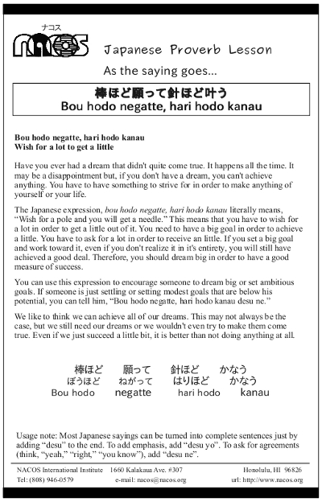

Bou hodo negatte, hari hodo kanau
Wish for a lot to get a little
Have you ever had a dream that didn't quite come true. It happens all the time. It may be a disappointment but, if you don't have a dream, you can't achieve anything. You have to have something to strive for in order to make anything of yourself or your life.
The Japanese expression, bou hodo negatte, hari hodo kanau literally means, “Wish for a pole and you will get a needle.” This means that you have to wish for a lot in order to get a little out of it. You need to have a big goal in order to achieve a little. You have to ask for a lot in order to receive an little. If you set a big goal and work toward it, even if you don't realize it in it's entirety, you will still have achieved a good deal. Therefore, you should dream big in order to have a good measure of success.
You can use this expression to encourage someone to dream big or set ambitious goals. If someone is just settling or setting modest goals that are below his potential, you can tell him, “Bou hodo negatte, hari hodo kanau desu ne.”
We like to think we can achieve all of our dreams. This may not always be the case, but we still need our dreams or we wouldn't even try to make them come true. Even if we just succeed a little bit, it is better than not doing anything at all.
Usage note: Most Japanese sayings can be turned into complete sentences just by adding “desu” to the end. To add emphasis, add “desu yo”. To ask for agreements (think, “yeah,” “right,” “you know”), add “desu ne”.

| © 1995-2013 NACOS International Institute. All Rights Reserved. |